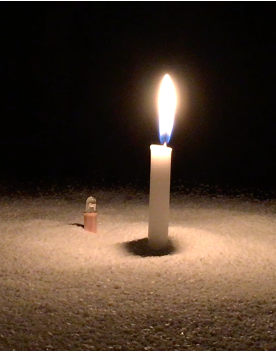
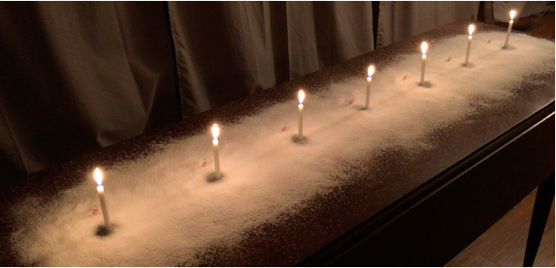
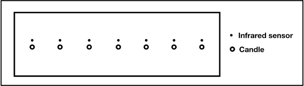
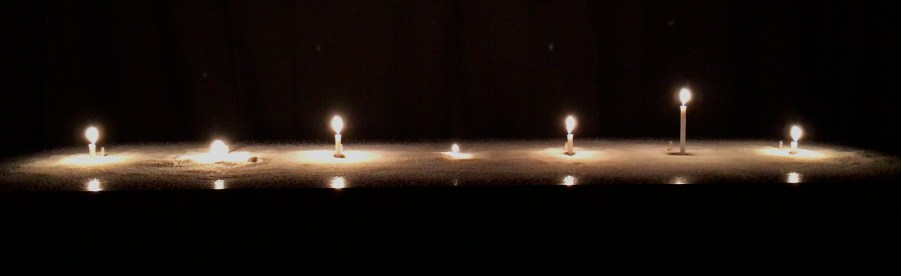

ちとせ ももとせ --- chitose momotose
Abstract
ちとせ ももとせ — chitose momotose is a sound and light installation. By lighting a candle, a participant can trigger a sound that gradually changes along with candle burning – a change in the length of the candle. With seven candles on the installation table lit, each candle triggers a unique sound at a unique timing with the use of infrared sensors; as a result, they together create weaving sound streams at the site. The musical composition will always be unique due to varying combinations of sounds based on numbers, timings, and lengths of the candles that participants light. The movements of candle flames create subtle fluctuations in sound. Slow and introspective time flows in the space, and participants and witnesses are encouraged to immerse themselves in the environment. The lights, sounds, warmth, smell, and texture of the candles will speak to the participants’ senses.
Project Description
ちとせ ももとせ — chitose momotose is a sound and light installation using candle lights. By lighting a candle, a participant can trigger a sound that gradually changes along with candle burning – a change in the length of the candle. With seven candles on the installation table lit, each candle triggers a unique sound at a unique timing with the use of infrared sensors; as a result, they together create weaving sound streams at the site. The musical composition will always be unique due to varying combinations of sounds based on numbers, timings, and lengths of the candles that participants light. The movements of candle flames create subtle fluctuations in sound. Slow and introspective time flows in the space, both physical and virtual, and participants and witnesses will be encouraged to immerse themselves in the environment. For this online iteration of the piece via YouTube Live, the participants will send a request to the artist by listing their names/nicknames by sending an email. The artist will light a candle for them as an executor and a witness at the site. The broadcast of the installation will be real-time, and people can participate by sending a request or simply witness the site online. The lights, sounds, warmth, smell, and texture of the candles will speak to the participants’ senses through their past experiences and imagination, and this actuation of bodily senses will trigger their emotions and memories that reside in them. If all candles are already lit, the participants will wait and enjoy the moment until a candle completely burns out. Following, the artist will light a candle in the open spot for a participant. The artist will reply to their email when their candle will be lit as well as post the participant’s name/nickname on the chat area on the YouTube channel. The time one candle burns may represent a period in a lifetime – may be a day, a year, ten years, or more.


Figure 2. chitose momotose 2
ちとせ/chitose means a thousand years, ももとせ /momotose means a hundred years. The title of the piece refers to a sense of time, history, and life. People’s lives can be long, short, depending on how a person sees it and at a different phase of one’s life; sometimes it seems unthinkably long, and sometimes it feels like a fraction. A person’s life may be short comparing to other natural existences in the world, such as trees, seas, and the Earth. However, seeing the family history and human history, it’s an ongoing time flow of thousands of years, and we individuals are a small but crucial part of it. Our bodies exist as matters, and as a result of the reproduction processes, new physical entities are born, and the humans continue to live in this world. On the other hand, non-physical entities produced by people continue to live after the death of physical bodies and without heirs. Memories of people from the past exist as cultures, arts, thoughts, and ideas, as memes. The sound and light installation ちとせ ももとせ — chitose momotose expresses a unification of the notion of the dichotomy of a matter and non-matter by incorporating physical matters – candles and salt –, and non-physical matters – thoughts and memories – that are generated by the physical matters. It evokes participants’ memories and expresses their existence through the ceremonial action of lighting a candle, warmth and smell of the candles, and the gradually morphing sounds that embrace the people and time in the space. Salt also is an important matter in this installation as it is both a symbolic and practical material for purifying in the culture that I grew up with, as well as in different cultures.
Thank you, NIME 2021, for hosting the online live exhibition of ちとせ ももとせ — chitose momotose.

Figure 3. chitose momotose 3
Installation Notes
The system:


Figure 4. chitose ommotose set-up 1


Figure 5. chitose momotose set-up 2
An infrared (IR) sensor placed near each candle reads infrared light that is emitted from the candle. The sensor data is mapped to parameter changes in sounds — amplitude of a sound, combination of sounds, filters and other effects. As a candle burns and its length shortens, the amount of infrared light received by the IR sensor changes. Thus, the sounds/music in the space gradually changes. A choice of a type of candle also affects the sounds due to their various lengths, thickness, and materials that cause different burning times.
Online Live Streaming
June 17, 2021, 2 pm - 4 pm, CST - Shanghai, China
June 17, 2021, 3 pm - 5 pm, JST - Tokyo, Japan
June 17, 2021, 7 am - 9 am, BST - London, UK
June 17, 2021, 2 am - 4 am, EDT - New York, USA
June 16, 2021, 11 pm - 1 am, PDT - Oregon, USA
* please mind the time difference.
YouTube Live for real-time online exhibition — https://youtu.be/gHWw6dYNQtE
ちとせ ももとせ ー chitose momotose, NIME 2021, YouTube Live
To Participate in the installation:
Please send an email to me at contact@akikohatakeyama.com to a candle to be lit for you.
In the email, please indicate your name or nickname to be shared during the installation. A name of your loved one will work as well. I will pick and light a candle on behalf of you.
If there are more people than the installation time can fit, I may choose a short candle, or the list of participants will rollover to the next-day installation in the future.
You can find more information at:
http://akikohatakeyama.com/v_chitose_NIME2021
Technical Requirement for Participants
Stable internet access to view a live stream on YouTube
Access to Emailing if they want to request a candle lighting
Comfortable environment to enjoy the online installation where one can immerse themselves in both the sonic and visual world of the installation.
Decent audio playback system for stereo audio – good speakers, or headphones that deliver low frequencies (60 Hz~) are ideal.
Media
ちとせ ももとせ ー chitose momotose
ちとせ ももとせ ー chitose momotose, Night 1 (archived video)
Online real-time exhibition at New Music Gathering 2020
More information: http://akikohatakeyama.com/v_chitose_NMG2020.html
ちとせ ももとせ ー chitose momotose, Night 2 (archived video)
Online real-time exhibition at New Music Gathering 2020
More information: http://akikohatakeyama.com/v_chitose_NMG2020.html


Figure 1. chitose momotose 1
Video link: http://akikohatakeyama.com/v_chitose.html
More information about NIME online exhibition: http://akikohatakeyama.com/v_chitose_NIME2021
Archived videos of an online installation from 2020: http://akikohatakeyama.com/v_chitose_NMG2020.html
Short bio
Akiko Hatakeyama is a composer/performer of electroacoustic music and intermedia. Her music focuses on realizing relationships between the body and mind into intermedia composition, often in conjunction with building customized instruments and interfaces. Akiko’s compositions and performances bridge boundaries between written music, improvisation, electronics, real-time computer-based interactivity, and visual media. In her compositions and performances, she interacts with sound, light, and haptic objects, making the dialogue between her inner self and environment perceivable. Akiko’s experience of embodied time, including memories, emotions, and personal experiences, is communicated nonverbally to the audience. As a result, her compositions and performances carry therapeutic effects for her, and Akiko aims to convey that to the audience in her performances.
Akiko obtained her B.A. in music from Mills College, M.A. in Experimental Music/Composition at Wesleyan University, and Ph.D. at Brown University. She is currently an assistant professor at the University of Oregon.